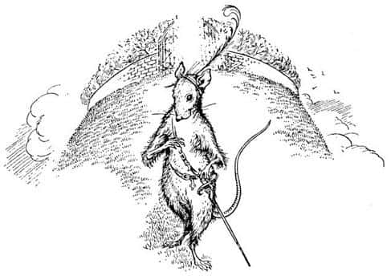

Gölge Ülkelere Veda
Eğer insan yorulmadan koşabilseydi, o zaman kimsenin koşmaktan başka bir şey yapmak isteyeceğini sanmıyorum. Bazen durmayı gerektiren özel nedenler olabilir, Eustace’in bağırmasının da özel bir nedeni vardı.
“Bakın! Bakın nereye geldik!”
Bağırdığı iyi oldu. Çünkü önlerinde Kazan Göleti’ni, göletin ötesindeki yüksek ve tırmanılması olanaksız kayalıkları, bazı yerlerde elmas gibi parıldayan, bazı yerlerde de koyu cam yeşilliğinde olan ve kayalıklardan aşağı dökülen tonlarca suyu; Büyük Çağlayan’ı görüyorlardı. Çağlayanın gök gürültüsüne benzer sesi şimdiden kulaklarını dolduruyordu.
“Durmayın! Yukarılara ve içerilere doğru ilerleyin” diye bağırdı Keskingöz, hafifçe yükselerek.
“Bu onun için çok kolay” dedi Eustace. Sonra Cevher de bağırmaya başladı:
“Durmayın. Yukarılara ve içerilere. Fazla düşünmeyin.”
Suyun gürültüsünden sesi zorlukla duyulmuştu, ama az sonra herkes onun gölete atladığını gördü. Diğerleri de apar topar aynısını yaptı. Su bekledikleri (özellikle Şaşkaloz’un) kadar soğuk değildi ama tatlı bir serinliği vardı. Çağlayana yüzdüklerini fark ettiler.
“Bu tamamen delilik” dedi Eustace, Edmund’a.
“Biliyorum. Ama yine de…” dedi Edmund.
“Ne harika değil mi?” dedi Lucy. “İsteseniz de korkamadığınızı fark ettiniz mi? Deneyin.”
“Vay be, gerçekten korkamıyorum” dedi Eustace denedikten sonra.
Çağlayanın dibine ilk Cevher ulaştı, Tirian hemen arkasındaydı. Jill en sondaydı ve her şeyi diğerlerinden daha iyi görebiliyordu. Beyaz bir şeyin çağlayandan yukarıya doğru yükseldiğini gördü. Bu beyaz şey Tekboynuz’du. Tırmanıyor mu yoksa yüzüyor mu söylemek imkânsızdı ama gittikçe yükseliyordu. Boynuzunun ucu başının üzerindeki suyu ikiye ayırıyor, su iki ayrı gökkuşağı gibi çağlayarak omuzlarından aşağı dökülüyordu. Onun hemen arkasında Kral Tirian vardı. Kollarını ve bacaklarını sanki yüzüyormuş gibi oynatıyor, doğruca yukarıya hareket ediyordu. Bir evin duvarlarında yüzen bir insan gibiydi tıpkı.
En komik görünenler köpeklerdi. Koşarken soluksuz kalmamışlardı, ama sürü halinde yukarıya çıkarken birçok aksırıp tıksırma duyuluyordu. Bunun nedeni havlamaya devam etmeleri ve her havlayışta ağızlarının burunlarının suyla dolmasıydı. Jill tüm bunları tam olarak fark edemeden çağlayandan yukarıya doğru yükselmeye başladı. Bu bizim dünyamızda imkânsızdı. Boğulmasanız bile suyun ağırlığı sivri kayalara çarparak paramparça olmanıza neden olurdu. Ama bu dünyada her şey mümkündü. Sudaki ışıklar ve pırıl pırıl parıldayan renkli taşlar arasında, ışığa tırmandığınızı hissederek yükseliyordunuz - korkabilselerdi, bu denli yüksek yerlerde dehşetten küçük dillerini yutarlardı. Daha sonra bu durum muhteşem ve heyecanlı bir hal aldı. Sonunda suyun döküldüğü kavisli kısma geliyor ve çağlayanın üzerindeki nehirle aynı seviyede olduğunuzu görüyordunuz. Akıntı arkanızda hızla uzaklaşıyordu, ama siz öylesine harika bir yüzücüydünüz ki, akıntıya karşı ilerleyebiliyordunuz. Çok geçmeden hepsi kıyıya çıkmıştı, ıslanmışlardı ama mutluydular.
Önlerinde uzun bir vadi vardı, artık çok daha yakın görünen, büyük karlı dağlar gökyüzüne doğru uzanıyordu.
“Yukarılara ve içerilere” dedi Cevher ve tekrar yola çıktılar.
Artık Narnia’yı terk etmişlerdi ve ne Peter’in ne Tirian’ın, ne de Kartal’ın daha önceden gördüğü Batının Vahşi Toprakları’na girmişlerdi. Lord Digory ve Leydi Polly daha önce oraya gitmişti. “Hatırlıyor musun? Hatırlıyor musun?” diye birbirlerine soruyorlardı; bunu, tüm grup ok gibi hızla koşarken, sakin bir sesle söylemişlerdi.
“Lordum?” dedi Tirian. “Hikâyelerde anlatıldığı gibi, dünya yaratıldığı gün burada olduğunuz doğru mu?”
“Evet” dedi Digory, “dün gibi hatırlıyorum.”
“Uçan bir atla mı?” diye sordu Tirian. “Bu doğru mu?”
“Elbette” dedi Digory. Köpekler havlamaya başladı, “Daha hızlı, daha hızlı!”
Böylece uçarcasına koşmaya başladılar, tepelerinde uçan kartaldan bile hızlı gidiyorlardı. Birbiri ardından dolambaçlı vadilerden geçtiler, tepelerin dik yamaçlarına tırmanıp, her zamankinden daha büyük bir hızla aşağıya indiler. Nehri takip edip, bazen diğer yakaya da geçerek göllerin üzerinden sürat tekneleri gibi kayarcasına gidip turkuaz renkli uzun bir gölü geçince düzgün ve yeşil bir tepe gördüler. Tepenin yamacı bir piramit kadar dikti ve zirvesini yeşil bir duvar çevreliyordu. Duvarın üzerinden, yaprakları gümüşe, meyveleri altına benzeyen ağaçların dalları görünmekteydi.
“Yukarılara ve içerilere!” diye kükredi Tekboynuz ve herkes ileri atıldı. Dosdoğru tepenin eteklerine yöneldiler ve kendilerini, körfezdeki bir mendirekte kırılıp kayalara tırmanan dalgaların hızıyla koşarken buldular. Yamaç bir evin çatısı kadar dikti ve çimlerle kaplıydı, ama kimsenin ayağı kaymıyordu. Zirveye ulaştıklarında yavaşladılar; bunun nedeni kendilerini görkemli altın kapıların önünde bulmalarıydı. Bir an için hiçbiri kapıları açmaya cesaret edemedi. Hepsi de meyvelere karşı hissettiklerinin aynısını hissediyordu. “Buna cesaret edebilir miyiz? Doğru olur mu? Buraya bizim için konulmuş olabilirler mi?”
Öylece dururken, duvarların içinden bir yerden, müthiş güzel ve güçlü bir boru sesi duyuldu ve kapılar sonuna kadar açıldı.
Tirian, kimin çıkacağını merak ederek nefesini tutmuş bekliyordu. Çıkan şey beklediği en son şeydi; başının etrafındaki çembere kırmızı bir tüy iliştirmiş küçük, zarif ve parlak gözlü bir konuşan fareydi bu, sol eli uzun kılıcının kabzasındaydı. Eğilerek kibarca selam verdi ve ince sesiyle, “Aslan adına hoş geldiniz. Yukarıya ve içeriye gelin” dedi.

Tirian, Kral Peter, Kral Edmund ve Kraliçe Lucy’ nin ileriye fırlayıp diz çökerek fareyi selamladıklarını ve hep beraber “Bastıbacak!” diye bağırdıklarını duydu. Sırf bunun şaşkınlığı bile Tirian’ın nefes alışının hızlanmasına yetti, çünkü Narnia’nın büyük kahramanlarından birinin; Büyük Beruna Savaşı’nda bulunmuş ve Denizci Caspian’la birlikte Dünyanın Sonu’na yelken açmış Fare Bastıbacak’ın karşısında durduğunu anlamıştı. Bunu düşünmeye zaman bulamadan iki güçlü kol onu sarmaladı. Tirian, yanaklarına kondurulan sakallı öpücükleri hissedip çok iyi hatırladığı bir sesin, “Hey! Delikanlı! Seni son gördüğümden bu yana uzayıp şişmanlamışsın!” dediğini duydu.
Bu babası Kral Erlian’dı; ne Tirian’ın son yıllarında hatırladığı kır saçlı savaşçıya, ne de bir devle girdiği savaştan sonra yaralı ve rengi atmış bir halde son olarak gördüğü krala benziyordu. Bu, yaz akşamları Cair Paravel Kalesi’nin bahçesinde, yatmadan hemen önce oyunlar oynayan küçük bir çocuk olduğu günlerden hatırladığı, genç ve mutlu babasıydı. Akşam yemeklerinde yediği ekmeğin, içtiği sütün kokusu burnunda tüttü.
Cevher kendi kendine, “Konuşabilmeleri için biraz yalnız bırakacağım, sonra gidip Kral Erlian’ı selamlayacağım. Bir tayken bana bir sürü elma vermişti” diye düşünüyordu. Az sonra başka ilginç bir şey daha oldu; kapıdan öylesine güçlü ve soylu bir at çıkmıştı ki, onun huzurunda bir Tekboynuz bile çekingen davranırdı. Bir an için Lord Digory ile Leydi Polly’ye bakıp, “Kuzenlerim!” diye kişnedi ve ikisi de, “Fledge! Eski dost Fledge!” diye bağırıp, onu öpmek için fırladı.
Fare içeriye girmeleri için ısrar etmeye devam ediyordu. Hepsi bahçeden kendilerine doğru esen tatlı kokular arasında altın kapılardan içeriye girdiler. Küçük beyaz çiçeklerle kaplı yumuşak zeminde yürüyerek ağaçlar altındaki serin gölgeliklere geldiler. Herkesin gözüne çarpan ilk şey, oranın dışarıdan görüldüğünden çok daha büyük olmasıydı. Kimsenin bunu düşünmeye zamanı yoktu, çünkü insanlar onları karşılamaya geliyordu.
Bildiğiniz herkes (o ülkelerin tarihini biliyorsanız) oradaydı. Baykuş Pasparlak, Kıllıkıpırdak Suratsız, büyüden kurtulmuş Kral Rilian, onun annesi Yıldız Kızı ve babası Caspian oradaydı. Onun hemen arkasında Lord Drinian, Lord Berne, Cüce Yaygaracı, Mantarsever, Sentor Fırtına ve büyük Kurtuluş Savaşı’ndan yüz kadar kahraman vardı. Başka bir yönden Archenland Kralı Cor, babası Kral Lune ile karısı Kraliçe Aravis, kardeşi Cesur Prens, Şimşek Yumruklu Corin, At Bree ve Kısrak Hwin geldi. Sonra - Tirian için bu diğerlerinden daha da şaşırtıcıydı - geçmişten, çok uzaklardan iki iyi kunduz ve Faun Tumnus ortaya çıktı. Selamlaşmalar, öpüşmeler ve el sıkışmalardan sonra tüm grup eski günlerden bahsetti (beş-altı yüzyıldan sonra tekrar eski günlerden konuşmanın ne kadar harika olduğunu bilemezsiniz). Üzerine bir Anka kuşunun tünediği ağacın bulunduğu bahçenin ortasına doğru yürüdüler. O ağacın altında iki taht vardı, tahtlarda oturan kral ve kraliçe o kadar görkemli ve güzeldi ki, herkes eğilerek selam verdi. Doğru olanı yapmışlardı, çünkü orada oturanlar Narnia ve Archenlandli birçok eski kralın ataları Kral Frank ve Kraliçe Helen’di. Tirian, Âdem ile Havva’nın en görkemli günlerinden bile daha eski bir tarihte olduğunu hissediyordu.
Yaklaşık yarım saat sonra (yarım yüzyıl sonra da olabilir, çünkü oradaki zaman buradakinden farklıdır) Lucy Narnialı eski dostu Faun Tumnus ile bahçe duvarından aşağı bakıyor ve Narnia’yı seyrediyordu. Aşağıya bakıldığında bu tepenin sanıldığından çok daha yüksek olduğu anlaşılıyordu: Parlak kayalıklar altlarında binlerce metre alçalıyor, aşağıdaki ağaçlar tuz tanecikleri büyüklüğünde görülüyordu. Sonra Lucy arkasını dönüp bahçeye baktı.
“Şimdi anlıyorum” dedi düşünceli bir şekilde. “Şimdi anlıyorum. Bu bahçe aynı ahır gibi. İçi dışından çok daha büyük.”
“Elbette, Havvakızı” dedi Faun. “Yukarı ve içeri gittikçe her şey büyür. İçerisi, dışarıdan daha büyüktür.”
Lucy dikkatle bahçeye baktı ve bunun bir bahçe değil, nehirleri, ormanları, denizleri ve dağlarıyla bir dünya olduğunu gördü. Bunlar hiç de yabancı gelmiyordu. Hepsini biliyordu.
“Anlıyorum” dedi. “Burası Narnia ve aşağıdaki Narnia’dan daha güzel, aynı ahırın dışındaki Narnia’dan daha güzel ve daha gerçek olduğu gibi! Anlıyorum… dünya dünya içinde, Narnia Narnia içinde…”
“Evet” dedi Tumnus, “bir soğan gibi; tek fark içeriye doğru gittikçe çember büyüyor.”
Lucy etrafa baktı ve çok geçmeden yeni ve harika bir şey olduğunu fark etti. Ne kadar uzakta olursa olsun, neye baksa, gözlerini üzerine diktiğinde sanki bir teleskopla bakıyormuş gibi berraklaşıp yaklaşıyordu. Güneydeki çölü ve onun arkasındaki büyük şehir Tashbaan’ı görebiliyordu, doğu yakasında, deniz kıyısındaki Cair Paravel’i ve bir zamanlar onun olan odanın penceresini de. Denizin açıklarında birbiri ardına sıralanmış adaları ve Dünyanın Sonu’nun ötesinde bulunan, Aslan’ın Ülkesi dedikleri kocaman dağı görebiliyordu. Bu dağın tüm dünyayı çevreleyen büyük bir sıradağlar zincirinin parçası olduğu belli oluyordu. Dağlar, gittikçe yaklaşıyormuş gibi görünüyordu. Sol tarafına baktı ve dağlardan belirgin bir şekilde ayrılmış, renkli bulut sandığı bazı şeyler gördü. Dikkatle baktığında bunların bulut olmadığını, gerçek bir kara parçası olduğunu fark etti. Gözlerini belirli bir noktaya dikip baktığında bağırmaya başladı, “Peter! Edmund! Gelin bakın! Çabuk gelin.” Gelip baktılar, onların gözleri de Lucy’ninkiler gibi görebiliyordu.
“Vay be!” diye bağırdı Peter. “Orası İngiltere. Şu da tüm maceralarımızın başladığı Profesör Kirk’ün taşradaki eski evi!”
“Ben o evin yıkıldığını sanıyordum” dedi Edmund.
“Öyleydi” dedi Faun. “Ama siz artık İngiltere içindeki İngiltere’ye bakıyorsunuz; burası nasıl gerçek Narnia’ysa orası da gerçek İngiltere. O İngiltere’de güzel olan hiçbir şey yıkılmadı.”
Aniden gözlerini başka bir noktaya kaydırdılar. Peter, Edmund ve Lucy şaşkınlıkla yutkunup bağırarak ellerini sallamaya başladılar; çünkü büyük ve derin vadinin karşısından el sallayan anne ve babalarını görmüşlerdi. Hani limanda beklediğiniz birinin büyük bir vapurun güvertesinden el sallaması gibi.
“Onların yanına nasıl gidebiliriz?” dedi Lucy.
“Çok kolay” dedi Bay Tumnus. “O ülke ve bu ülke - tüm gerçek ülkeler - Aslan’ın büyük dağlarındaki çıkıntılardır. Tüm yapacağımız şey yukarıya ve içeriye doğru, kara birbirine bağlanana kadar yürümektir. Dinleyin! Kral Frank’ın borusu çalıyor. Gitmeliyiz.”
Çok geçmeden kendilerini, bu dünyadakinden çok daha yüksek dağlara doğru yürürken - ne kadar büyük ve canlı bir yürüyüş yoluydu o - buldular. Fakat o dağlarda kar yoktu: Ormanlar, yeşil yamaçlar, nefis bahçeler ve birbiri üstüne sonsuz bir şekilde devam eden gürül gürül çağlayanlar vardı. Üzerinde yürüdükleri, her iki yanında çok derin vadilerin uzandığı arazi gittikçe daralıyor, vadinin karşısındaki kara parçası gittikçe yaklaşıyordu; burası İngiltere’ydi.
Önlerindeki ışık güçleniyordu. Lucy, renkli kayalıkların bir dev merdiveni gibi oraya tırmandığını görebiliyordu. Sonra her şeyi unuttu, çünkü Aslan, sanki canlı bir güç ve güzellik çağlayanı gibi, kayadan kayaya atlayarak geliyordu.
Aslan’ın yanına çağırdığı ilk kişi Şaşkaloz oldu. Aslan’a doğru yürüyen Şaşkaloz’dan daha zayıf ve gülünç bir eşek görmemişsinizdir; Aslan’ın yanında, bir St. Bernard köpeğinin yanındaki bir kedi yavrusu gibi görünüyordu. Aslan başını eğip Şaşkaloz’a bir şeyler fısıldadı, eşeğin uzun kulakları aşağı sarktı, sonra Aslan bir şey daha söyledi ve kulaklar tekrar dikildi. Kimse ne dediğini duyamadı. Aslan onlara döndü ve, “Henüz, istediğim kadar mutlu görünmüyorsunuz” dedi.
Lucy, “Aslan, geri gönderilmekten o kadar korkuyoruz ki. Sen bizi kendi dünyamıza çok sık geri yolladın” dedi.
“Korkmayın” dedi Aslan. “Tahmin edemediniz mi?”
Kalpleri pır pır etti, içlerinde müthiş bir umut belirdi.
“Gerçek bir tren kazası oldu” dedi Aslan sakince. “Babanız, anneniz ve siz - tahmin ettiğiniz gibi gölge ülkelerdesiniz - öldünüz. Sömestr bitti, tatil başladı. Rüya sona erdi, sabah oldu.”
Konuştukça aslan gibi görünmemeye başladı; sonra olanlar o kadar harikaydı ki, yazmak mümkün değil. Bu bizim için tüm hikâyelerin sonu. Onların sonsuza kadar mutlu yaşadığını söyleyebiliriz. Onlar için ise bu gerçek hikâyenin başlangıcıdır. Dünyadaki yaşamları ve Narnia’daki maceraları kitabın kapağı ve giriş sayfasıydı; şimdi yeryüzünde kimsenin okumadığı Büyük Hikâye’nin Birinci Bölümü’ne başlıyorlar. Bu hikâye sonsuza kadar devam eder, her bölüm bir öncekinden daha güzeldir.
C.S. Lewis’in önerdiği okuma sırasıyla Narnia Günlükleri:
Büyücünün Yeğeni
Aslan, Cadı ve Dolap
At ve Çocuk
Prens Caspian
Şafak Yıldızı’nın Yolculuğu
Gümüş Sandalye
Son Savaş